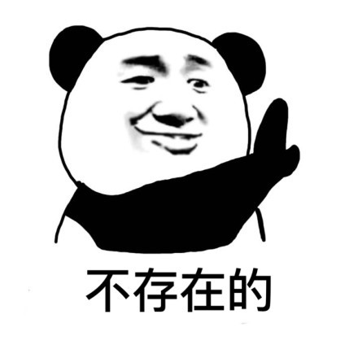

列表标签
给一堆数据添加列表语义, 就是告诉浏览器这堆数据是一个整体
列表分类
1. 无序列表(最多) (unordered list)
这一堆数据没有先后之分
ul和li是一个整体, 一个组合, 所以一般情况下ul和li一起出现 无序标签可以嵌套, ul中有li, li中也可以有ul
需要显示的条目
需要显示的条目
需要显示的条目
2. 有序列表(最少) (ordered list)
one
two
three
four
3. 定义列表(其次) (definition list)

Frank
描述文字